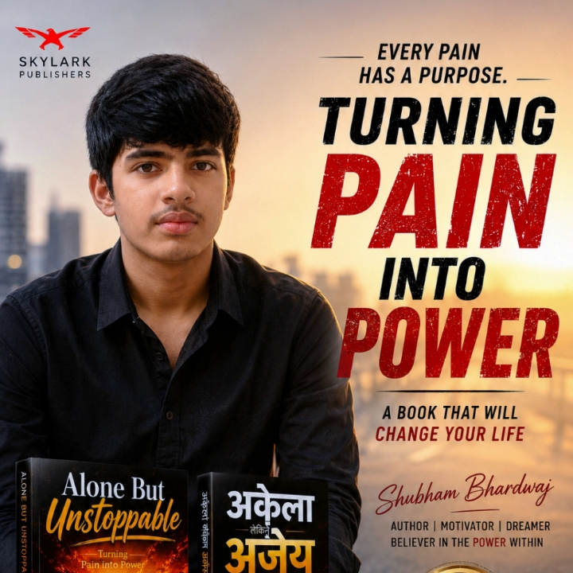
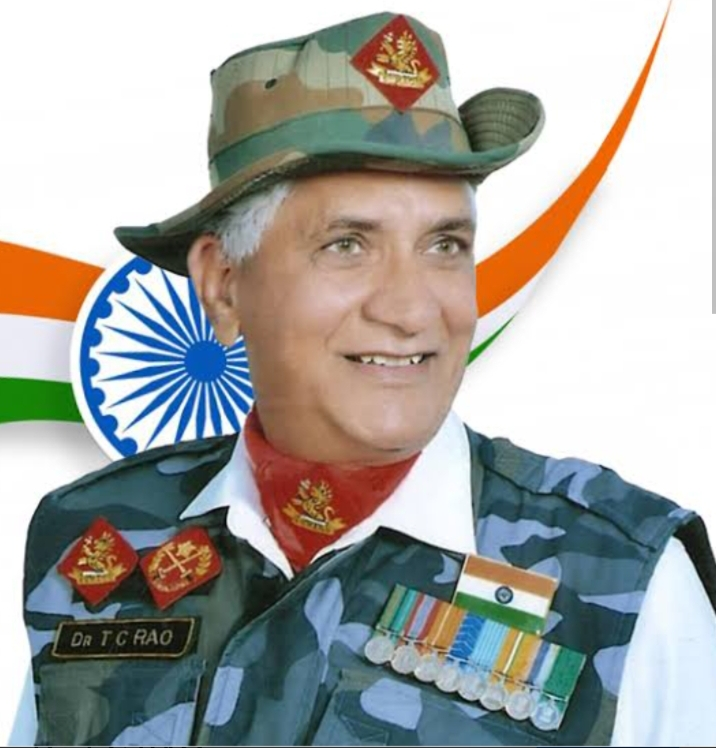

"When life breaks you, rebuild stronger. When the world ignores you, build yourself."
Alone But Unstoppable – Turning Pain Into Power is not just a book. It is a journey through loneliness, pain, self-doubt, failure and ultimately transformation. Written for students and young individuals, this book explores the silent battles many people fight every day but rarely talk about. In a world filled with comparison, pressure and expectations, many students begin to feel lost, misunderstood and alone. This book reminds readers that being alone does not mean being weak. Sometimes the greatest strength is built during the hardest moments of life. Through lessons on emotional strength, resilience, discipline, confidence and mental toughness, the book encourages readers to stop waiting for motivation and start building themselves through action. Every challenge carries a lesson. Every setback carries an opportunity. Every failure carries the seed of future success. The central message of this book is simple: Your pain is not the end of your story. It can become the beginning of your power.
Alone But Unstoppable – Turning Pain Into Power सिर्फ एक किताब नहीं है, बल्कि दर्द, अकेलेपन, संघर्ष और आत्मविश्वास की यात्रा है। यह पुस्तक उन विद्यार्थियों और युवाओं के लिए लिखी गई है जो कभी न कभी खुद को अकेला, कमजोर या असफल महसूस कर चुके हैं। आज की प्रतिस्पर्धी दुनिया में कई छात्र तुलना, असफलता के डर, पारिवारिक दबाव और आत्म-संदेह से जूझते हैं। यह पुस्तक उन्हें याद दिलाती है कि अकेला होना कमजोरी नहीं है। जीवन की सबसे कठिन परिस्थितियाँ ही अक्सर सबसे मजबूत व्यक्तित्व बनाती हैं। यह पुस्तक भावनात्मक मजबूती, आत्मविश्वास, अनुशासन, मानसिक दृढ़ता और संघर्ष से सीखने की प्रेरणा देती है। इसका मुख्य संदेश है: आज का दर्द, कल की आपकी सबसे बड़ी ताकत बन सकता है। यदि आप हार मानने की सोच रहे हैं, यदि आपको लगता है कि कोई आपको नहीं समझता, यदि आप खुद को फिर से मजबूत बनाना चाहते हैं, तो यह पुस्तक आपके लिए है।
Published By Skylark Publications:
FOUNDER & CHAIRMAN
Retired Indian Army Officer • Visionary Leader • Nation Builder
After a distinguished military career, Major Dr. T.C. Rao established Skylark with a vision of excellence, leadership and nation-building. His commitment to discipline, integrity and service continues to inspire thousands across India.

Built On Trust • Driven By Excellence